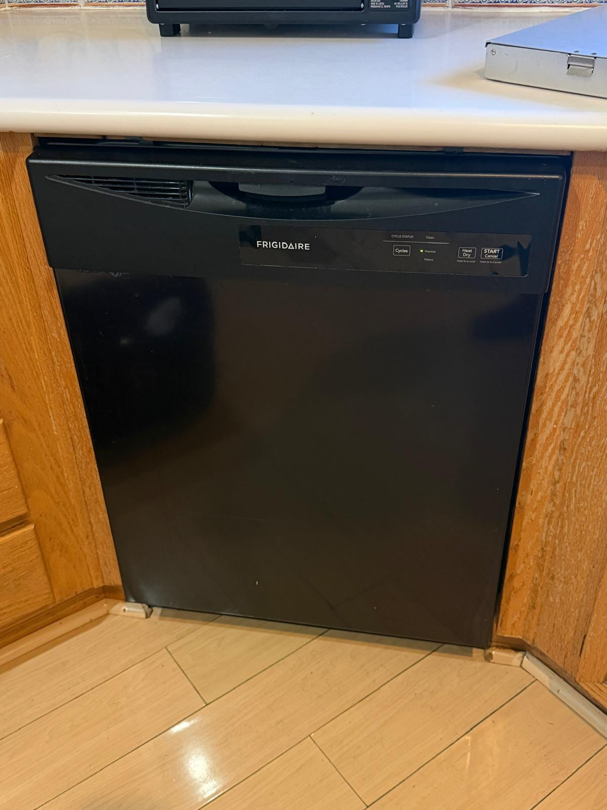
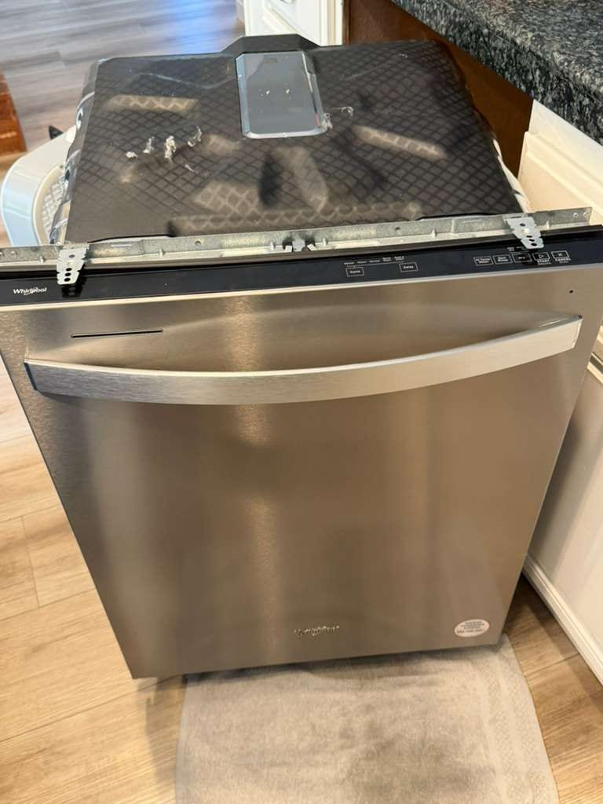
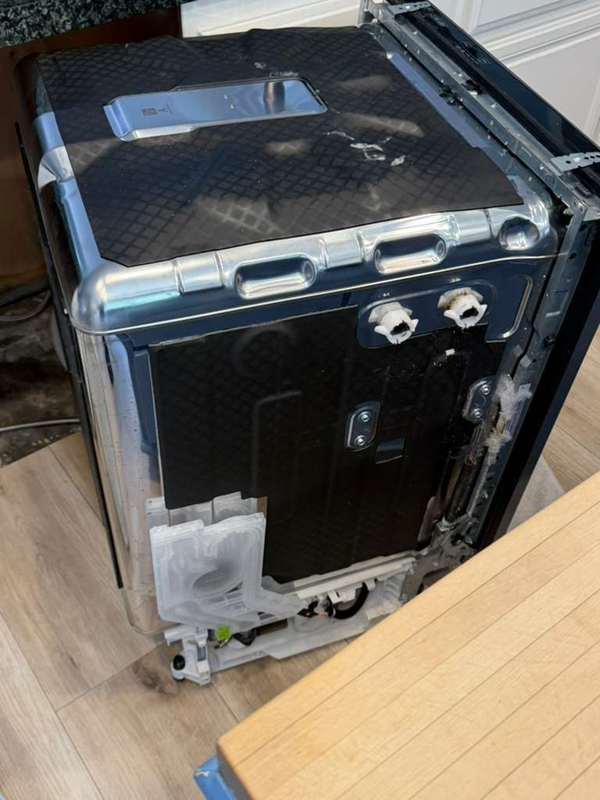
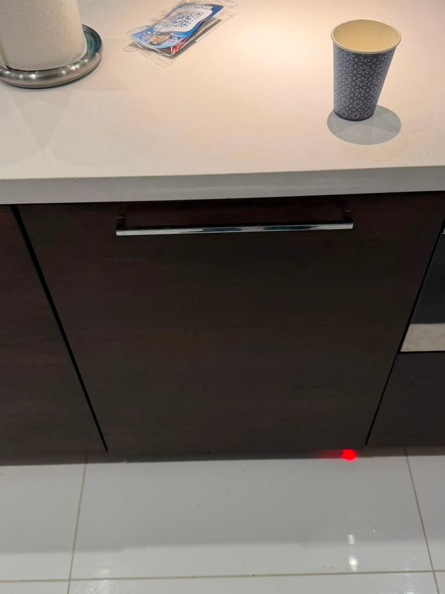
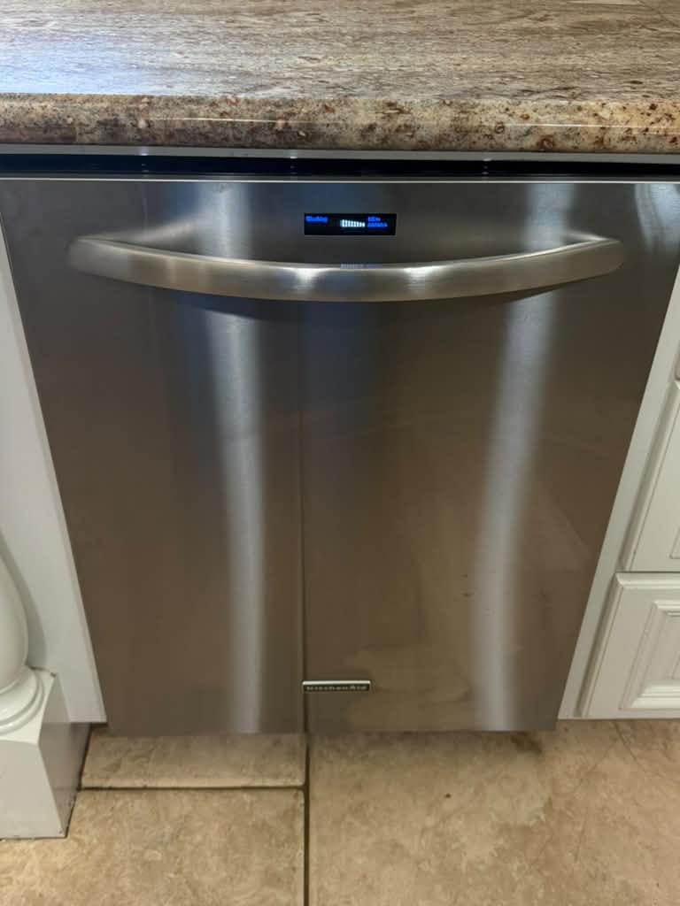
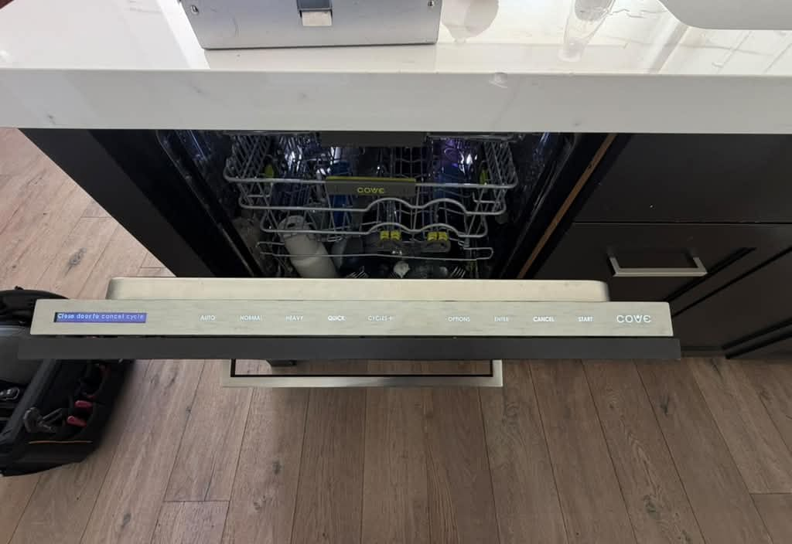

Dishwasher Repair in
Orange County, CA
Same-day service on all brands: leaks, drain issues, noisy cycles, and more. Licensed technicians on every job.
5.0 · 156 Google reviewsMon–Sat, 8am–7pm. You don't need to know which part failed; tell us what the dishwasher is doing.
What to expect
- Flat $99 diagnostic feeApplied toward the repair if you approve the work.
- Written quote firstItemized, before any work starts.
- 90-day parts, 30-day laborWarranty on every repair.
- Same-day serviceCall or request online.
Family-owned since 2017 · Licensed, bonded & insured
Recent Dishwasher Repairs
Recent dishwasher work our technician completed includes a Bosch drain-pump replacement in Dana Point, a Frigidaire not-draining repair in Irvine, another Bosch drain-pump replacement in Laguna Beach shown open and closed, a Whirlpool leak repair in San Clemente, a panel-ready Bosch not-draining repair in Newport Beach, a Samsung drain-pump repair in Lake Forest, a Bosch spray-arm repair in Irvine, a KitchenAid control board replacement in Santa Ana, and a Cove water-hose replacement for a leak in San Clemente.







Show all 12 dishwasher repairs




What Dishwasher Repair Customers Say
From our 156 verified 5-star Google reviews
MK arrived on time, quickly diagnosed and repaired our dishwasher. Great service, reasonably priced.
Highly recommended- arrived on time, fair price- cleaned up the job site
They saved Christmas entertaining by coming before Christmas (though it took a couple trips)! Thank you for a job well done!
AG did a great job repairing my dishwasher. He was prompt, quick and fair. I will use him again for any future repair needs.
Our technician was top rate in terms of product knowledge so the repairs on our dishwasher and wash machine were handled efficiently and on budget. Great customer service as well — I highly recommend this company.
Ag was incredible! He came on time, knew exactly how to fix our Bosch dishwasher. He even cleaned out the drain that was causing the water to drain slowly. Would def recommend!
How Our Dishwasher Repair Works
Same-day service is available. If a part has to be ordered, you will know before any work starts.
Request a RepairCall or Request Online
Call (949) 629-5365 or book online. Tell us the dishwasher brand and symptom.Full Diagnostic
Your technician checks the filter, drain, pump, spray arms, and door seal to find the root cause.Clear Quote First
You get an itemized quote before any work begins. The $99 diagnostic fee is applied toward the repair if you approve.Fixed & Warranted
Most dishwashers are back in service the same visit. Every repair carries a 90-day parts and 30-day labor warranty.
Pricing & Discounts
- $99 diagnostic fee: applied toward your repair when you approve the work. If you decide not to proceed, the $99 covers the visit.
- 30-day deposit: call us back within 30 days and your $99 still credits as a deposit on the repair estimate.
- Multi-unit visits: first unit $99, each additional unit on the same visit $49.
- 20% off labor for repeat customers and seniors 60+ (cannot combine with other offers).
Estimates vary by brand, part availability, and diagnosis. Final quote is provided before repair. See full pricing guide
Diagnostic visit$99
- Applied toward the repair when you approve the work
- Itemized written quote before any work starts
- You decide whether to proceed
Common Dishwasher Problems We Fix
Most dishwasher failures are diagnosed and repaired in a single visit; common parts stocked on every service vehicle.
- Dishwasher not draining: standing water at the bottom
- Leaking water from the door, bottom, or under the unit
- Dishes still dirty or greasy after a full cycle
- Loud grinding, humming, or rattling noise during wash
- Dishwasher won't start or no power to control panel
- Door latch won't close, lock, or release
- Error codes on display (E24, E25, OE, LE, F1, F2)
- Detergent dispenser not opening mid-cycle
- White film or mineral deposits on dishes and interior
- Dishwasher not filling with water or filling too slowly
Dishwasher Brands We Service
All major brands serviced. We stock common parts for the brands below on every truck.
- Samsung
- LG
- Whirlpool
- GE
- Maytag
- Frigidaire
- Bosch
- KitchenAid
- Miele
- Thermador
- Viking
- Dacor
- Electrolux
- Kenmore
- Fisher & Paykel
- Asko
- All brands
- Bosch
- E24/E25 drain pump errors, door latch failures on 500/800 series, control module faults on integrated panel-ready models. One of the most common brands we service in OC.
- Samsung
- Water inlet valve failures, OE/LE error codes, heavy-duty cycle sensor faults, and door gasket leaks on DW series models.
- Whirlpool & Maytag
- Drain pump failures, spray arm clogging from hard water, control board faults on Quiet Partner and PowerClean series.
- LG
- AE/LE error codes (water leak sensor), drain pump failures, and EasyRack Plus rail failures common on LG front-control models.
- KitchenAid
- Control board failures, pump motor issues, and door latch assembly wear, common on built-in and panel-ready models in OC remodels.
- Miele
- Pump failures on G-series, intake/drain fault (F11/F14), and door hinge wear on older G 4000 and G 5000 series machines. See our Miele repair page.
- GE & GE Profile
- Water inlet valve failures, spray arm blockages, and control panel errors on Profile series with hidden-control panels.
- Frigidaire, Dacor & Others
- Also service Thermador, Viking, Electrolux, Kenmore, Fisher & Paykel, and Asko. Call to confirm parts availability.
Independent repair service. Not affiliated with or endorsed by these manufacturers; brand names and logos are trademarks of their owners.
Hard Water & Dishwasher Performance in Orange County
Orange County tap water is classified as moderately to very hard, ranging from 200 to 400+ ppm in many service areas. Over time, calcium and magnesium deposits build up inside your dishwasher, clogging spray arm holes, coating the heating element, and leaving a white film on dishes that no detergent can remove.
💧 Signs your dishwasher has a hard water problem
White chalky residue on glasses and the interior walls, reduced water pressure from the spray arms, dishes that feel gritty even after a hot cycle, or a dishwasher that uses more detergent than before without better results.
What helps: Use a rinse aid in every cycle, run a dishwasher cleaner monthly, and consider a whole-home water softener if scale is a recurring issue. During a service visit, we descale the interior and clear blocked spray arm jets as part of a standard clean-and-inspect.
Repair or Replace Your Dishwasher?
The U.S. Department of Energy puts the average service life of a dishwasher at 15.2 years, longer than most people expect and longer than a refrigerator or a gas range. If your machine is under 12 years old, repair almost always makes financial sense; quality replacement units run $600–$1,200 installed, plus the cost and hassle of removal and delivery. Common repairs (drain pump, door latch, spray arm, inlet valve) are a fraction of that.
Our rule of thumb: If the repair is under 50% of what a comparable new dishwasher costs and the machine is under 12 years old, fix it. Past that, with a failed control board or motor, we'll tell you honestly, and help you decide rather than push for the repair.
Typical Dishwasher Repair Costs in Orange County
Estimates vary by brand, part availability, and diagnosis. Final quote is provided before repair.
| Repair Type | Typical Range |
|---|---|
| Service call / diagnostic: Orange County market average (often credited toward repair) | $75 – $100 |
| Drain pump | $180 – $350 |
| Door latch / interlock | $130 – $260 |
| Water inlet valve | $150 – $300 |
| Circulation (wash) pump motor | $250 – $450 |
| Heating element | $160 – $320 |
| Control board | $250 – $450 |
See the dishwasher repair cost guide or our full appliance repair pricing guide for broader Orange County pricing context.
Dishwasher repair across Orange County
Universal Appliances Repair Group Inc. provides dishwasher repair throughout Orange County, California. We repair all dishwasher types and brands, including Bosch, Whirlpool, Samsung, LG, KitchenAid, Miele, GE, Maytag, Frigidaire, Dacor, and more.
Our technicians serve Anaheim, Irvine, Huntington Beach, Santa Ana, Costa Mesa, Fullerton, Garden Grove, and nearby cities, with same-day service available. Call (949) 629-5365 or book online to schedule a dishwasher repair visit.
Dishwasher Repair: FAQs
The most common causes are a clogged drain filter, a blocked drain hose, or a failed drain pump. If your dishwasher connects to a garbage disposal, a clogged disposal or a newly installed one with the knockout plug still in place will also prevent drainage. Check and clean the filter first; it takes two minutes and fixes most drain calls.
Leaks typically come from a worn or cracked door gasket, a loose water inlet valve, a faulty float switch, or a cracked door latch that prevents a proper seal. Leaks from the bottom of the door are almost always the gasket. Leaks from under the unit usually point to the inlet valve or pump seal.
Dirty dishes after a full wash usually come from clogged spray arms (mineral deposits block the holes), a failing wash pump, a detergent dispenser that doesn't open mid-cycle, or water temperature that's too low. In Orange County, hard water accelerates spray arm clogging; cleaning them monthly with white vinegar helps.
Grinding during the wash cycle usually means broken glass or debris is caught in the pump impeller. A loud hum with no water movement points to a seized pump motor. Rattling is often an unsecured utensil hitting the spray arm. A technician can isolate the exact cause in one visit.
Yes. Bosch is one of the most common dishwashers we service across Orange County. We repair E24 and E25 drain errors, door latch failures on the 500 and 800 series, and control module faults on integrated panel-ready models. Bosch parts are stocked on most of our service vehicles.
Yes. OC water ranges from 200 to 400+ ppm in many areas. Mineral scale builds up on spray arm holes, the heating element, and interior walls, reducing cleaning performance and straining the pump over time. Monthly dishwasher cleaner and consistent rinse aid use slow this down. We descale the interior during service visits.
Yes. Same-day dishwasher repair is available across most of Orange County when you call before noon. A broken dishwasher means hand-washing every meal; we prioritize fast dispatch. Call (949) 629-5365 to check today's availability.
The U.S. Department of Energy puts the average service life of a dishwasher at 15.2 years. If yours is under 12 years old and the repair is under half the cost of a new unit, repair almost always wins; a quality replacement dishwasher runs $600–$1,200 installed. Common repairs (drain pump, door latch, spray arm, inlet valve) are well under that threshold. We give you an honest quote before any work starts.
Latest Guides
- Dishwasher Not Draining in La Habra? 6 Causes and Fixes
- KitchenAid Dishwasher Control Board Replacement: Signs, Cost and What We Check First
- Miele Dishwasher Error Codes: F11, F14, F70 and More Explained
- Dishwasher Leaking in Dana Point? Common Causes & What It Costs to Fix
- How Much Does Dishwasher Repair Cost in Orange County? (2025 Pricing Guide)
Need Dishwasher Repair in Orange County?
Same-day service available. All brands, all failure types. Licensed technicians and a 90-day parts, 30-day labor warranty. We cover Anaheim, Irvine, Huntington Beach, Santa Ana, Costa Mesa, and 25+ more cities.
Call (949) 629-5365
Request a Repair
Mon–Sat, 8am–7pm